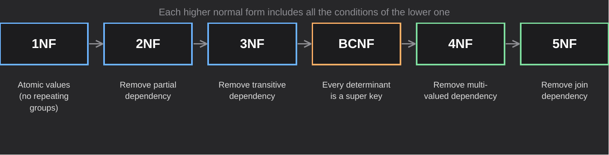

Unit 2
Relational Model and Relational Database Design
Relational Model
1) Explain candidate key, primary key and foreign key.
A key is an attribute (or set of attributes) that helps to uniquely identify a tuple (row) in a relation (table). Consider STUDENT(Roll_no, Enroll_no, Email, Name, Dept_id).
- Candidate key: a minimal set of attributes that can uniquely identify every tuple. A relation can have more than one candidate key. Example: Roll_no, Enroll_no and Email are all candidate keys of STUDENT (each is unique and cannot be reduced further).
- Primary key: the one candidate key chosen by the designer to identify tuples. It must be unique and NOT NULL, and a table can have only one. Example: Roll_no is chosen as the primary key. The remaining candidate keys (Enroll_no, Email) are called alternate keys.
- Foreign key: an attribute in one relation that refers to the primary key of another (or the same) relation. It creates a link between tables and enforces referential integrity. Example: Dept_id in STUDENT refers to Dept_id (primary key) in DEPARTMENT. Values may be NULL or duplicate, but must exist in the parent table.
CREATE TABLE Department (Dept_id INT PRIMARY KEY, Dept_name VARCHAR(30));
CREATE TABLE Student (
Roll_no INT PRIMARY KEY,
Email VARCHAR(40) UNIQUE,
Name VARCHAR(30),
Dept_id INT,
FOREIGN KEY (Dept_id) REFERENCES Department(Dept_id)
);2) Explain following terms with suitable example: (a) Primary Key (b) Candidate Key (c) Super Key (d) On delete cascade
(a) Primary Key
The attribute (or minimal combination of attributes) chosen to uniquely identify each row of a table. It cannot be NULL and cannot repeat. Example: in EMPLOYEE(Emp_id, Name, Phone), Emp_id is the primary key. A primary key made of two or more attributes is a composite key, e.g. (Roll_no, Course_id) in ENROLLMENT.
(b) Candidate Key
Every minimal attribute set that can uniquely identify rows is a candidate key. One of them becomes the primary key. Example: In EMPLOYEE(Emp_id, Aadhar_no, Name), both Emp_id and Aadhar_no are candidate keys; Emp_id is selected as the primary key.
(c) Super Key
A set of one or more attributes that uniquely identifies a tuple. It may contain extra (unnecessary) attributes. Every candidate key is a super key but not every super key is a candidate key (a candidate key is a minimal super key).
Example: EMPLOYEE(Emp_id, Name, Phone) with Emp_id unique. Super keys: {Emp_id}, {Emp_id, Name}, {Emp_id, Phone}, {Emp_id, Name, Phone}. Only {Emp_id} is a candidate key because it is minimal.
(d) ON DELETE CASCADE
It is a referential action defined on a foreign key. When a row in the parent table is deleted, all matching rows in the child table are automatically deleted. It prevents orphan records and keeps referential integrity.
CREATE TABLE Employee (
Emp_id INT PRIMARY KEY,
Name VARCHAR(30),
Dept_id INT,
FOREIGN KEY (Dept_id) REFERENCES Department(Dept_id)
ON DELETE CASCADE
);If Department D1 is deleted, all employees with Dept_id = 'D1' are automatically deleted. Other options: ON DELETE SET NULL, ON DELETE RESTRICT / NO ACTION.
3) Explain following relational algebra operations: (a) Natural join operation (b) Selection and projection operation
Relational algebra is a procedural query language. Operations take one or two relations as input and produce a new relation as output. Consider the sample relations:
EMPLOYEE
| Emp_id | Name | Dept_id | Salary |
|---|---|---|---|
| 1 | Ravi | D1 | 30000 |
| 2 | Meena | D2 | 25000 |
| 3 | Amit | D1 | 40000 |
DEPARTMENT
| Dept_id | Dept_name |
|---|---|
| D1 | Sales |
| D2 | HR |
| D3 | IT |
(a) Natural join ( ⋈ )
The natural join of R and S combines tuples that have equal values on all common attributes, and the common attribute appears only once in the result. It is equal to a Cartesian product followed by a selection on the common attributes and then a projection that removes the duplicate column.
Notation: R ⋈ S Query: EMPLOYEE ⋈ DEPARTMENT (common attribute: Dept_id)
Result
| Emp_id | Name | Dept_id | Salary | Dept_name |
|---|---|---|---|---|
| 1 | Ravi | D1 | 30000 | Sales |
| 2 | Meena | D2 | 25000 | HR |
| 3 | Amit | D1 | 40000 | Sales |
Department D3 (IT) has no matching employee, so it does not appear in the result.
(b) Selection (σ) and Projection (π)
Selection selects rows (tuples) that satisfy a condition. Notation: σcondition(R). Example: σSalary > 28000(EMPLOYEE) gives the employees Ravi and Amit.
Projection selects the specified columns (attributes) and removes duplicate rows. Notation: πA1, A2(R). Example: πName, Salary(EMPLOYEE) gives (Ravi, 30000), (Meena, 25000), (Amit, 40000).
Combined: πName(σDept_id = "D1"(EMPLOYEE)) gives the names Ravi and Amit.
4) List relational algebra operators and explain any two with example.
Operators
| Operator | Symbol | Type |
|---|---|---|
| Select | σ | Unary |
| Project | π | Unary |
| Rename | ρ | Unary |
| Union | ∪ | Binary (set) |
| Set difference | − | Binary (set) |
| Cartesian product | × | Binary |
| Intersection | ∩ | Binary (set) |
| Join (theta / equi / natural) | ⋈ | Binary |
| Division | ÷ | Binary |
| Assignment | ← | Unary / binary |
| Aggregate (group) | G | Unary |
Fundamental operators: select, project, union, set difference, Cartesian product and rename. The others can be derived from them.
1. Union (∪)
R ∪ S returns all tuples that are in R, or in S, or in both, with duplicates removed. The relations must be union compatible (same number of attributes with same domains).
Example: Let ARTS(Name) = {Ravi, Meena} and SCIENCE(Name) = {Meena, Amit}. Then ARTS ∪ SCIENCE = {Ravi, Meena, Amit}: students who joined at least one club.
2. Set difference (−)
R − S returns tuples that are in R but not in S (union compatible relations required). Example: ARTS − SCIENCE = {Ravi}: students in ARTS who are not in SCIENCE.
Bank example: πCustomer_name(Depositor) ∪ πCustomer_name(Borrower) lists all customers who have an account, a loan, or both.
5) What is Relational Algebra? Define Relational Algebra operation cross product with example.
Relational algebra is a procedural query language that consists of a set of operations that take one or two relations as input and produce a new relation as output. It specifies what to retrieve and also how (the order of operations). It forms the theoretical basis of SQL and of query optimisation in a DBMS.
Cartesian (cross) product ( × )
The Cartesian product R × S combines every tuple of R with every tuple of S. If R has n tuples and S has m tuples, the result has n × m tuples; if R has a attributes and S has b attributes, the result has a + b attributes. If attribute names clash, they are prefixed with the relation name (R.A, S.A).
Notation: R × S = { t q | t ∈ R and q ∈ S }
STUDENT
| Roll | Name |
|---|---|
| 1 | Ravi |
| 2 | Meena |
COURSE
| Cid | Cname |
|---|---|
| C1 | DBMS |
| C2 | OS |
STUDENT × COURSE (2 × 2 = 4 tuples, 2 + 2 = 4 attributes)
| Roll | Name | Cid | Cname |
|---|---|---|---|
| 1 | Ravi | C1 | DBMS |
| 1 | Ravi | C2 | OS |
| 2 | Meena | C1 | DBMS |
| 2 | Meena | C2 | OS |
The product by itself gives many meaningless combinations, so it is usually followed by a selection, e.g. σSTUDENT.Dept_id = DEPT.Dept_id(STUDENT × DEPT), which is equivalent to a join.
6) Explain selection and projection operation with example.
EMPLOYEE
| Emp_id | Name | City | Salary |
|---|---|---|---|
| 101 | Ravi | Ahmedabad | 30000 |
| 102 | Meena | Surat | 25000 |
| 103 | Amit | Ahmedabad | 40000 |
| 104 | Neha | Rajkot | 25000 |
Selection (σ)
- Selects rows (tuples) that satisfy a given predicate; it is a horizontal subset of the relation.
- Notation: σpredicate(R). Predicates use =, ≠, <, ≤, >, ≥ and can be combined with ∧ (and), ∨ (or), ¬ (not).
- Example: σCity = "Ahmedabad" ∧ Salary > 35000(EMPLOYEE) returns only the tuple (103, Amit, Ahmedabad, 40000).
- Selection does not remove columns, and it does not produce duplicates.
Projection (π)
- Selects columns (attributes) from a relation; it is a vertical subset. Duplicate rows are eliminated.
- Notation: πA1, A2, ...(R).
- Example: πSalary(EMPLOYEE) returns {30000, 25000, 40000}; 25000 appears once only because duplicates are removed.
- Example: πName, City(EMPLOYEE) returns (Ravi, Ahmedabad), (Meena, Surat), (Amit, Ahmedabad), (Neha, Rajkot).
Both together: πName(σCity = "Ahmedabad"(EMPLOYEE)) returns {Ravi, Amit}.
7) What is database schema? Explain the select, project, natural join, union and Cartesian product operations.
Database schema is the logical design (skeleton) of a database. It describes the relations (tables), their attributes with data types, keys and constraints. It is defined once at design time and changes rarely. Example:
Branch(branch_name, branch_city)
Account(branch_name, acc_no, balance)
Depositor(customer_name, acc_no)The actual data in the tables at a moment is the instance. Operations of relational algebra are explained below, using EMPLOYEE(Emp_id, Name, Dept_id, Salary) and DEPARTMENT(Dept_id, Dept_name) from Q3.
| Operation | Notation | Meaning | Example and result |
|---|---|---|---|
| Select | σp(R) | Chooses rows satisfying predicate p | σSalary>28000(EMPLOYEE) gives Ravi and Amit rows |
| Project | πA(R) | Chooses columns A and removes duplicates | πName(EMPLOYEE) gives Ravi, Meena, Amit |
| Natural join | R ⋈ S | Matches tuples on all common attributes, keeping one copy of them | EMPLOYEE ⋈ DEPARTMENT adds Dept_name to every employee (3 tuples) |
| Union | R ∪ S | All tuples in R or S or both; union-compatible relations | πName(Club_A) ∪ πName(Club_B): names in either club |
| Cartesian product | R × S | Every tuple of R paired with every tuple of S; n × m tuples | EMPLOYEE × DEPARTMENT gives 3 × 3 = 9 tuples with 6 attributes |
8) Consider following schema and represent given statements in relational algebra form.
Branch(branch_name, branch_city)
Account(branch_name, acc_no, balance)
Depositor(customer_name, acc_no)(i) Customers who have an account at 'abc' branch
πcustomer_name( σbranch_name = "abc"( Account ⋈ Depositor ) )
Explanation: Account and Depositor are joined on the common attribute acc_no; rows of branch 'abc' are selected and the customer names are projected.
(ii) Customers who have an account in 'Ahmedabad' city and balance greater than 10,000
πcustomer_name( σbranch_city = "Ahmedabad" ∧ balance > 10000( Branch ⋈ Account ⋈ Depositor ) )
Explanation: Branch ⋈ Account joins on branch_name, and the result is joined with Depositor on acc_no. Both conditions are applied together with ∧.
(iii) List of all branch names with their maximum balance
branch_nameGmax(balance)( Account )
Explanation: G is the aggregate (grouping) operator. Account tuples are grouped by branch_name and the maximum balance in each group is calculated. The same query in SQL: SELECT branch_name, MAX(balance) FROM Account GROUP BY branch_name;
9) Explain transformation of relational expression into equivalent relational expression.
Two relational-algebra expressions are equivalent if they produce the same set of tuples on every legal database instance. The query optimiser uses equivalence rules to transform a given expression into another, cheaper one (query optimisation). The order of tuples is not important.
Equivalence rules
- Cascade of selections: σθ1 ∧ θ2(E) = σθ1(σθ2(E)).
- Commutativity of selection: σθ1(σθ2(E)) = σθ2(σθ1(E)).
- Cascade of projections: πL1(πL2(…πLn(E))) = πL1(E), if L1 ⊆ L2 ⊆ … ⊆ Ln.
- Selection with Cartesian product / join: σθ(E1 × E2) = E1 ⋈θ E2.
- Commutativity of join: E1 ⋈ E2 = E2 ⋈ E1.
- Associativity of natural join: (E1 ⋈ E2) ⋈ E3 = E1 ⋈ (E2 ⋈ E3).
- Selection distributes over join: if θ involves only attributes of E1, then σθ(E1 ⋈ E2) = (σθ(E1)) ⋈ E2.
- Projection distributes over join: πL1 ∪ L2(E1 ⋈ E2) = πL1(E1) ⋈ πL2(E2) when the join attributes are in L1 ∪ L2.
- Union and intersection are commutative and associative. Set difference is not commutative.
- Selection distributes over ∪, ∩ and −: σθ(E1 ∪ E2) = σθ(E1) ∪ σθ(E2).
- Projection distributes over union: πL(E1 ∪ E2) = πL(E1) ∪ πL(E2).
Example
Find the customers who have an account at a branch located in Ahmedabad.
Original: πcustomer_name( σbranch_city="Ahmedabad"( Branch ⋈ Account ⋈ Depositor ) )
Transformed (by rule 7, selection pushed down): πcustomer_name( ( σbranch_city="Ahmedabad"(Branch) ) ⋈ Account ⋈ Depositor )
Both give the same answer, but in the second expression the selection is done first, so the intermediate join works on far fewer tuples and is cheaper.
Heuristics used by the optimiser
- Perform selections as early as possible (reduces the number of tuples).
- Perform projections early (reduces the number of attributes).
- Replace Cartesian product followed by selection by a join.
- Execute the most restrictive selections and joins first.
Relational Database design
1) What are anomalies in database design? How can we solve it?
Anomalies are problems that occur in a relation because of redundancy (the same data stored many times). They appear while inserting, deleting or updating data. Consider EMP_DEPT, which stores employee and department data in a single table:
EMP_DEPT
| Emp_id | Emp_name | Dept_id | Dept_name | Dept_head |
|---|---|---|---|---|
| 1 | Ravi | D1 | Sales | Mehta |
| 2 | Meena | D1 | Sales | Mehta |
| 3 | Amit | D2 | HR | Shah |
- Insertion anomaly: a new department (D3, IT, Joshi) cannot be added until it has at least one employee, because Emp_id (the key) cannot be NULL.
- Deletion anomaly: if Amit (the only employee of D2) is deleted, the information about department HR and its head Shah is lost as well.
- Update (modification) anomaly: if the head of Sales changes, the value Mehta must be changed in every row of Sales employees. If one row is missed, the data becomes inconsistent.
Solution
- Apply normalization: decompose the relation into smaller relations so that each fact is stored only once.
- Decomposition must be lossless (no information lost on join) and preferably dependency-preserving.
- Here: EMPLOYEE(Emp_id, Emp_name, Dept_id*) and DEPARTMENT(Dept_id, Dept_name, Dept_head). A new department can now be inserted without employees, deleting Amit keeps HR, and the head's name is stored once.
2) What problems can occur due to wrong database design? How they can be solved?
| Problem | Description | Solution |
|---|---|---|
| Data redundancy | Same data is repeated in many rows; wastes storage. | Normalization; store each fact once. |
| Insertion anomaly | Cannot insert some data without other unrelated data. | Separate independent entities into different tables. |
| Deletion anomaly | Deleting one fact removes other useful facts. | Decompose so each table holds one subject. |
| Update anomaly / inconsistency | A change must be made at many places; missing one gives inconsistent data. | Remove redundancy using 2NF, 3NF, BCNF. |
| Null values | Many attributes have no value, wasting space and complicating queries. | Create separate tables for optional groups of attributes. |
| Loss of information | Wrong decomposition produces spurious tuples on joining (lossy join). | Use lossless-join decomposition. |
| Loss of dependencies | Some functional dependencies cannot be checked without a join. | Use dependency-preserving decomposition (3NF always possible). |
| Poor performance and maintenance | Large tables with repeated data are slow and hard to maintain. | Normalize, then selectively denormalize if needed for speed. |
In general, a good design is obtained by applying functional dependencies and normal forms (1NF to BCNF) and checking that the decomposition is lossless.
3) Explain the issues of a database design.
A bad (unnormalized) design creates the following issues, which the designer must avoid:
- Redundancy: repeated data increases storage and processing cost.
- Inconsistency: redundant copies may disagree after an update.
- Insertion, deletion and update anomalies (see Q1).
- Null values: attributes that do not apply to all tuples are stored as NULL.
- Integrity problems: hard to enforce keys and constraints correctly.
- Decomposition issues: when a large relation is split, we must ensure the split is lossless (original data can be reconstructed) and dependency preserving (all FDs can still be checked).
Example of a lossy decomposition issue
R(Emp_id, Skill, Project) split into R1(Emp_id, Skill) and R2(Skill, Project) can produce wrong (spurious) tuples when joined on Skill, because Skill is not a key of either relation. A good design uses functional dependencies to choose decompositions that avoid this.
How to resolve
- Identify the functional dependencies and keys of the relation.
- Normalize step by step: 1NF → 2NF → 3NF → BCNF (and 4NF, 5NF if needed).
- Verify that each decomposition is lossless and dependency preserving.
4) Explain BCNF with example.
Boyce-Codd Normal Form (BCNF) is a stricter version of 3NF. A relation R is in BCNF if, for every non-trivial functional dependency X → Y in R, X is a super key of R. In other words, every determinant must be a candidate (super) key.
BCNF removes redundancy that remains in 3NF when a non-key attribute determines part of a candidate key (overlapping candidate keys).
Example
Relation TEACH(Student, Subject, Teacher) with these rules: a student can learn a subject from only one teacher, and each teacher teaches only one subject. FDs: (Student, Subject) → Teacher and Teacher → Subject. Candidate keys: (Student, Subject) and (Student, Teacher).
TEACH
| Student | Subject | Teacher |
|---|---|---|
| Ravi | DBMS | Prof. A |
| Meena | DBMS | Prof. A |
| Ravi | OS | Prof. B |
| Amit | OS | Prof. B |
The relation is in 3NF (all attributes are prime), but not in BCNF because in Teacher → Subject, the determinant Teacher is not a super key. Subject is repeated for each student of the teacher (redundancy and update anomaly).
Decomposition into BCNF
R1(Teacher, Subject) key: Teacher
R2(Student, Teacher) key: (Student, Teacher)In R1 the only FD is Teacher → Subject (Teacher is the key), and R2 has no non-trivial FD. Both are in BCNF, and the join on Teacher is lossless. Note that the FD (Student, Subject) → Teacher is not preserved: BCNF decomposition may lose a dependency.
5) Explain how to find closure of a set of attributes?
The closure of a set of attributes X under a set of FDs F, written X+, is the set of all attributes that are functionally determined by X. It is used to find keys, to test whether an FD holds, and to check equivalence of FD sets.
Algorithm
- Start with result = X.
- Repeat: for each FD Y → Z in F, if Y ⊆ result, then add Z to result.
- Stop when no more attributes can be added. The final result is X+.
Example
R(A, B, C, D, E) with F = { A → B, BC → D, D → E }. Find (AC)+.
| Step | Result | FD used |
|---|---|---|
| 0 | {A, C} | Start with X |
| 1 | {A, B, C} | A → B (A ⊆ result) |
| 2 | {A, B, C, D} | BC → D (B, C ⊆ result) |
| 3 | {A, B, C, D, E} | D → E |
(AC)+ = {A, B, C, D, E} = all attributes of R, hence AC is a super key (and a candidate key since neither A+ nor C+ is all of R).
Uses of closure
- Testing an FD: X → Y holds in F if and only if Y ⊆ X+.
- Finding keys: X is a super key if X+ contains all attributes of R.
- Equivalence and canonical cover of FD sets.
6) Define functional dependency. Explain trivial and non-trivial FD with example.
A functional dependency (FD) X → Y between two sets of attributes of a relation R means that the value of X uniquely determines the value of Y: if two tuples have the same X value, they must have the same Y value. X is the determinant and Y the dependent. Example: Roll_no → Name (a roll number determines exactly one name).
Trivial FD
An FD X → Y is trivial if Y ⊆ X (the right side is a subset of the left side). It always holds. Examples: {Roll_no, Name} → Roll_no, and Name → Name.
Non-trivial FD
An FD X → Y is non-trivial if Y is not a subset of X (Y ⊄ X). It gives real constraints on the data. Example: Roll_no → Name. If X ∩ Y = ∅ as well (no common attributes) it is called a completely non-trivial FD.
| FD | Type | Reason |
|---|---|---|
| {Roll_no, Name} → Name | Trivial | Name is a subset of the left side |
| {Roll_no, Name} → Name, City | Non-trivial (partly) | City is not in the left side |
| Roll_no → City | Completely non-trivial | No attribute common to both sides |
7) Explain irreducible sets of functional dependency with example.
An irreducible set of FDs (also called a minimal cover or canonical cover) is a set that is equivalent to the original set F, but has no redundancy. A set Fc is irreducible if:
- The right side of every FD has a single attribute.
- No FD has an extraneous attribute on the left side (removing any left attribute changes the closure).
- No FD is redundant (removing it changes the closure; it cannot be derived from the others).
Steps
- Split every FD so that the right side has one attribute.
- Remove extraneous attributes from left sides (for XA → B check whether X → B follows from F).
- Remove redundant FDs (an FD that can be derived from the remaining ones).
Example
Let F = { A → B, C → B, D → ABC, AC → D }.
- Single attribute on right: A → B, C → B, D → A, D → B, D → C, AC → D.
- Extraneous left attributes: in AC → D, check A → D: A+ = {A, B} (no). Check C → D: C+ = {C, B} (no). So none is extraneous.
- Redundant FDs: D → B can be derived from D → A and A → B, so it is removed. The others are all necessary.
Irreducible set: Fc = { A → B, C → B, D → A, D → C, AC → D }. It is equivalent to F but has no redundancy. A set can have more than one irreducible cover.
8) What is functional dependency? Explain its usage in database design.
A functional dependency X → Y states that the value of attribute set X uniquely determines the value of attribute set Y (see Q6). It is a constraint derived from the meaning (semantics) of the data. Example: Emp_id → Emp_name, Dept_id → Dept_name.
Usage in database design
- Finding keys: using closure, a set X is a candidate key if X+ is all attributes and X is minimal.
- Normalization: normal forms are defined with FDs: 2NF (no partial dependency), 3NF (no transitive dependency) and BCNF (every determinant is a super key).
- Removing redundancy and anomalies: FDs show which attributes should be kept in the same relation and which should be separated.
- Lossless decomposition: a split of R into R1 and R2 is lossless if (R1 ∩ R2) → R1 or (R1 ∩ R2) → R2.
- Dependency preservation: FDs are used to check that all dependencies can still be enforced on the decomposed relations without joins.
- Enforcing integrity constraints: FDs are the basis of key constraints and unique constraints.
- Query optimisation and design verification: FD sets are compared for equivalence through attribute closure.
9) What is Functional Dependency? Explain non-loss decomposition.
Functional dependency: X → Y means each value of X is associated with exactly one value of Y (example: Dept_id → Dept_name).
Non-loss (lossless-join) decomposition means that a relation R is split into two or more relations R1, R2, … in such a way that, when they are joined back by natural join, the original relation is obtained exactly, with no tuple lost and no extra (spurious) tuple added. That is, R1 ⋈ R2 = R.
Condition for lossless decomposition of R into R1 and R2
- R1 ∪ R2 = R (all attributes are kept).
- R1 ∩ R2 ≠ ∅ (there is a common attribute).
- The common attributes form a key of at least one of the relations: (R1 ∩ R2) → R1 or (R1 ∩ R2) → R2.
Example (lossless)
EMP(Emp_id, Name, Dept_id, Dept_name) with Dept_id → Dept_name. Decompose into R1(Emp_id, Name, Dept_id) and R2(Dept_id, Dept_name). Common attribute Dept_id is a key of R2 (Dept_id → Dept_name), so R1 ⋈ R2 = EMP: the decomposition is lossless.
Example (lossy)
R(Emp_id, Skill, Project) decomposed into R1(Emp_id, Skill) and R2(Skill, Project). The common attribute Skill is not a key in either relation, so the join produces spurious tuples and the decomposition is lossy.
10) What is normalization? What is the need for normalization?
Normalization is the process of organising the attributes and tables of a relational database to reduce data redundancy and eliminate insertion, deletion and update anomalies. It is done by decomposing a large relation into smaller, well-structured relations using functional dependencies and a series of normal forms (1NF, 2NF, 3NF, BCNF, 4NF, 5NF).
Need for normalization
- To minimise redundancy and save storage space.
- To avoid insertion, deletion and update anomalies.
- To maintain data consistency and integrity.
- To make the database design logical, simpler to understand and maintain.
- To make the structure flexible so that new data can be added without redesign.
- To make queries and updates on smaller tables faster and easier.
11) What is normalization? What is redundancy? Compare 1NF and 2NF with example.
Normalization: the process of decomposing relations to remove redundancy and anomalies (see Q10).
Redundancy: unnecessary repetition of the same data in many places in a database. It wastes space and may cause inconsistency. Example: writing the department name 'Sales' in every employee row of that department.
1NF
A relation is in First Normal Form if all attributes contain only atomic (indivisible), single values: no multivalued attributes and no repeating groups. Example (not in 1NF):
STUDENT (not in 1NF)
| Roll_no | Name | Phone |
|---|---|---|
| 1 | Ravi | 9811, 9822 |
| 2 | Meena | 9833 |
Converted to 1NF by giving each phone number its own row:
STUDENT (1NF)
| Roll_no | Name | Phone |
|---|---|---|
| 1 | Ravi | 9811 |
| 1 | Ravi | 9822 |
| 2 | Meena | 9833 |
2NF
A relation is in Second Normal Form if it is in 1NF and no non-prime attribute is partially dependent on any candidate key (every non-key attribute depends on the whole key). Applies only when the key is composite.
Example: ENROLL(Roll_no, Course_id, Student_name, Grade), key (Roll_no, Course_id). Roll_no → Student_name is a partial dependency, so ENROLL is in 1NF but not 2NF. Decompose: STUDENT(Roll_no, Student_name) and ENROLL(Roll_no, Course_id, Grade).
| Basis | 1NF | 2NF |
|---|---|---|
| Condition | All values atomic; no repeating groups | In 1NF and no partial dependency |
| Removes | Multivalued attributes / repeating groups | Partial dependency of non-key attributes on part of key |
| Key type concerned | Any | Matters only for composite keys |
| Redundancy | Still high | Reduced, but transitive dependencies remain |
| Order | First step | Second step (needs 1NF first) |
12) What is normalization? Explain 1NF, 2NF & 3NF.
Normalization is the process of decomposing relations into smaller relations to remove redundancy and anomalies, using functional dependencies and normal forms.
First Normal Form (1NF)
Every attribute holds only atomic values; there are no multivalued attributes or repeating groups. Example: a Phone column holding '9811, 9822' violates 1NF; store each number in a separate row.
Second Normal Form (2NF)
The relation is in 1NF and every non-prime attribute is fully functionally dependent on every candidate key (no partial dependency). Example: ENROLL(Roll_no, Course_id, Student_name, Course_name, Grade) with key (Roll_no, Course_id): Roll_no → Student_name and Course_id → Course_name are partial dependencies. Decompose:
STUDENT(Roll_no, Student_name)
COURSE(Course_id, Course_name)
ENROLL(Roll_no, Course_id, Grade)Third Normal Form (3NF)
The relation is in 2NF and no non-prime attribute is transitively dependent on a candidate key. Formally, for every non-trivial FD X → A, either X is a super key or A is a prime attribute. Example: EMP(Emp_id, Emp_name, Dept_id, Dept_name) with Emp_id → Dept_id and Dept_id → Dept_name: Dept_name depends on Emp_id through Dept_id (transitive). Decompose:
EMP(Emp_id, Emp_name, Dept_id)
DEPT(Dept_id, Dept_name)13) Why should normalization be performed on a table and what are its benefits. Explain 3NF and BCNF.
Normalization should be performed to remove redundancy and the insertion, deletion and update anomalies that arise from a poorly designed table (see Q1, Q10).
Benefits
- Less data redundancy and less storage space.
- Consistent, accurate data (a fact is stored and updated in only one place).
- No insertion, deletion or update anomalies.
- Better organised, understandable design with enforced integrity.
- Easier maintenance and extension of the database.
- Faster updates and index operations on smaller tables.
3NF
A relation is in 3NF if it is in 2NF and no non-prime attribute is transitively dependent on the primary key. Equivalent: for every non-trivial FD X → A, either X is a super key or A is a prime attribute. Example: STUDENT(Roll_no, Name, Pin, City) with Pin → City is not in 3NF; split into STUDENT(Roll_no, Name, Pin) and PINCODE(Pin, City).
BCNF
A relation is in BCNF if, for every non-trivial FD X → Y, X is a super key. It is stricter than 3NF because it does not allow a prime attribute on the right side unless the left side is a super key. Example: TEACH(Student, Subject, Teacher) with Teacher → Subject is in 3NF but not BCNF; decompose into (Teacher, Subject) and (Student, Teacher).
14) Explain 1NF, 2NF, 3NF and BCNF.

| Normal form | Rule | Violation example | Fix |
|---|---|---|---|
| 1NF | All values atomic; no repeating groups | Phone = '9811, 9822' | One value per cell; new row or table |
| 2NF | 1NF + no partial dependency on a composite key | (Roll_no, Course_id) → Grade but Roll_no → Name | Move Roll_no → Name to a STUDENT table |
| 3NF | 2NF + no transitive dependency (X → A: X super key or A prime) | Emp_id → Dept_id → Dept_name | Move Dept_id → Dept_name to DEPT table |
| BCNF | For every non-trivial X → Y, X is a super key | Teacher → Subject, Teacher not a key | Decompose into (Teacher, Subject) and (Student, Teacher) |
Every BCNF relation is in 3NF, every 3NF relation is in 2NF, and every 2NF relation is in 1NF. Lossless decomposition into BCNF is always possible, but dependency preservation is guaranteed only up to 3NF.
15) Explain 2NF with example.
A relation is in Second Normal Form (2NF) if (i) it is in 1NF, and (ii) every non-prime attribute is fully functionally dependent on the whole candidate key; there is no partial dependency (a non-key attribute depending on only a part of a composite key).
Example: ORDER_ITEM(Order_id, Product_id, Product_name, Quantity). Candidate key: (Order_id, Product_id).
ORDER_ITEM (1NF, not 2NF)
| Order_id | Product_id | Product_name | Quantity |
|---|---|---|---|
| O1 | P1 | Pen | 10 |
| O1 | P2 | Book | 2 |
| O2 | P1 | Pen | 5 |
FDs: (Order_id, Product_id) → Quantity, but Product_id → Product_name is a partial dependency. 'Pen' is repeated in two rows, so there is redundancy and an update anomaly.
Decomposition into 2NF
PRODUCT
| Product_id | Product_name |
|---|---|
| P1 | Pen |
| P2 | Book |
ORDER_ITEM
| Order_id | Product_id | Quantity |
|---|---|---|
| O1 | P1 | 10 |
| O1 | P2 | 2 |
| O2 | P1 | 5 |
Now every non-key attribute depends on the whole key of its table, and the product name is stored only once.
16) Explain 3NF with example.
A relation is in Third Normal Form (3NF) if it is in 2NF and there is no transitive dependency of a non-prime attribute on the primary key. For every non-trivial FD X → A, either X is a super key or A is a prime attribute.
A transitive dependency exists when A → B and B → C, where B is not a key, so A → C indirectly.
Example: EMPLOYEE(Emp_id, Emp_name, Dept_id, Dept_name). Key: Emp_id. FDs: Emp_id → Dept_id and Dept_id → Dept_name, therefore Emp_id → Dept_name is transitive.
EMPLOYEE (2NF, not 3NF)
| Emp_id | Emp_name | Dept_id | Dept_name |
|---|---|---|---|
| 1 | Ravi | D1 | Sales |
| 2 | Meena | D1 | Sales |
| 3 | Amit | D2 | HR |
The department name 'Sales' is repeated; changing the name requires many updates.
Decomposition into 3NF
EMPLOYEE
| Emp_id | Emp_name | Dept_id |
|---|---|---|
| 1 | Ravi | D1 |
| 2 | Meena | D1 |
| 3 | Amit | D2 |
DEPARTMENT
| Dept_id | Dept_name |
|---|---|
| D1 | Sales |
| D2 | HR |
Both tables are in 3NF: no non-key attribute depends on another non-key attribute.
17) What is the advantage of using 3NF? Explain with example.
Advantages of 3NF
- Removes transitive dependencies, so redundancy is greatly reduced.
- Avoids insertion, deletion and update anomalies caused by non-key dependencies.
- Always possible with a lossless-join and dependency-preserving decomposition (BCNF cannot always guarantee the latter).
- Good balance between a clean design and query performance (fewer joins than a highly decomposed schema).
- Easy to maintain and enforce integrity.
Example
Before 3NF: BOOK(ISBN, Title, Publisher, Publisher_city) with ISBN → Publisher and Publisher → Publisher_city. A publisher with 1000 books has its city stored 1000 times. Problems:
- Insert: a new publisher cannot be stored until a book exists.
- Delete: deleting the last book of a publisher erases the publisher's city.
- Update: if the publisher moves, 1000 rows must be changed.
After 3NF: BOOK(ISBN, Title, Publisher) and PUBLISHER(Publisher, Publisher_city). The city is stored once; all three anomalies disappear and the original data can be recovered by joining on Publisher.
18) Explain BCNF with example.
A relation is in BCNF if for every non-trivial FD X → Y in it, X is a super key. It handles anomalies that remain in 3NF when a relation has several overlapping candidate keys.
Example: COURSE_TEACH(Student, Course, Instructor). Rules: each instructor teaches one course, and a course can be taught by many instructors. FDs: (Student, Course) → Instructor and Instructor → Course. Candidate keys: (Student, Course), (Student, Instructor).
COURSE_TEACH
| Student | Course | Instructor |
|---|---|---|
| S1 | DBMS | Shah |
| S2 | DBMS | Shah |
| S1 | OS | Patel |
| S3 | DBMS | Joshi |
It is in 3NF because Course is a prime attribute, but not in BCNF: in Instructor → Course the determinant Instructor is not a super key. The fact 'Shah teaches DBMS' is repeated for every student (redundancy).
Decomposition into BCNF
INSTRUCTOR_COURSE (key: Instructor)
| Instructor | Course |
|---|---|
| Shah | DBMS |
| Patel | OS |
| Joshi | DBMS |
STUDENT_INSTRUCTOR
| Student | Instructor |
|---|---|
| S1 | Shah |
| S2 | Shah |
| S1 | Patel |
| S3 | Joshi |
Each determinant is now a super key in its table; redundancy is removed. The dependency (Student, Course) → Instructor can no longer be checked in a single table (a drawback of BCNF).
19) Why do we need normalization? Explain 4NF & 5NF.
Need: to reduce redundancy, avoid insertion/deletion/update anomalies, keep data consistent and make the design easy to maintain (see Q10). The higher normal forms 4NF and 5NF deal with redundancy that comes from multivalued and join dependencies.
Fourth Normal Form (4NF)
A relation is in 4NF if it is in BCNF and it has no non-trivial multivalued dependency (MVD) except those where the determinant is a super key. An MVD X →→ Y means that for each value of X there is a set of Y values, independent of the other attributes.
Example: STUDENT_INFO(Student, Course, Hobby). A student takes many courses and has many hobbies, and these two facts are independent: Student →→ Course and Student →→ Hobby. Every combination must be stored.
STUDENT_INFO (BCNF, not 4NF)
| Student | Course | Hobby |
|---|---|---|
| Ravi | DBMS | Chess |
| Ravi | DBMS | Music |
| Ravi | OS | Chess |
| Ravi | OS | Music |
Decompose into 4NF: STUDENT_COURSE(Student, Course) and STUDENT_HOBBY(Student, Hobby).
Fifth Normal Form (5NF / PJNF)
A relation is in 5NF if it is in 4NF and has no non-trivial join dependency that is not implied by its candidate keys. It cannot be decomposed further into smaller relations without losing information (every lossless join decomposition is implied by the keys).
Example: SUPPLY(Supplier, Part, Project) where a supplier supplies a part, a part is used in a project, and a project is served by the supplier, with the rule: if (S, P), (P, J) and (J, S) pairs exist then the triple (S, P, J) exists. It is decomposed into SP(Supplier, Part), PJ(Part, Project) and JS(Project, Supplier); the natural join of the three gives back SUPPLY without spurious tuples.
| 4NF | 5NF |
|---|---|
| Deals with multivalued dependency | Deals with join dependency |
| Needs BCNF first | Needs 4NF first |
| Decomposes into two relations | May need three or more relations |
20) What is non-loss decomposition in database? How it is useful in database?
Non-loss (lossless-join) decomposition is the splitting of a relation R into smaller relations R1, R2, …, Rn so that the natural join of the parts gives back exactly the original relation: R1 ⋈ R2 ⋈ … ⋈ Rn = R (no tuple lost, no spurious tuple added).
Test for decomposition of R into R1 and R2
- R1 ∪ R2 = R.
- R1 ∩ R2 ≠ ∅.
- (R1 ∩ R2) → R1 or (R1 ∩ R2) → R2 (the common attributes are a key of one part).
Example
R(Emp_id, Name, Dept_id, Dept_name) with Dept_id → Dept_name is split into R1(Emp_id, Name, Dept_id) and R2(Dept_id, Dept_name). Common attribute Dept_id → Dept_name (a key of R2), so the join gives back R: lossless.
Usefulness
- It allows a large relation to be normalized (redundancy and anomalies removed) without losing any information.
- The original relation can always be reconstructed by joins, so queries on the original design still give correct answers.
- It prevents spurious tuples, which would give wrong or misleading query results.
- It is the basic requirement for every normalization algorithm (3NF synthesis, BCNF decomposition).
- Together with dependency preservation it ensures that constraints can be enforced efficiently.
21) Normalize (decompose) the following relation into lower to higher normal form (from 1NF to 4NF).
Given relation PLANT (with repeating groups):
| PLANT | MANAGER | MACHINE | SUPPLIER_NAME | SUPPLIER_CITY |
|---|---|---|---|---|
| Plant-A | Ravi | Lath Boiler | Jay industry Abb appliance | Ahmedabad Surat |
| Plant-B | Meena | Cutter Boiler CNC | Raj machinery Daksh industry Jay industry | Vadodara Rajkot Ahmedabad |
Dependencies from the data: PLANT → MANAGER; SUPPLIER_NAME → SUPPLIER_CITY; and a plant has a set of machines and a set of suppliers that are independent of each other (PLANT →→ MACHINE | SUPPLIER_NAME).
Step 1: First Normal Form (1NF)
Each cell must hold a single value. Every machine is paired with every supplier of the plant (Plant-A: 2 × 2 = 4 rows, Plant-B: 3 × 3 = 9 rows). Key: (PLANT, MACHINE, SUPPLIER_NAME).
PLANT (1NF)
| PLANT | MANAGER | MACHINE | SUPPLIER_NAME | SUPPLIER_CITY |
|---|---|---|---|---|
| Plant-A | Ravi | Lath | Jay industry | Ahmedabad |
| Plant-A | Ravi | Lath | Abb appliance | Surat |
| Plant-A | Ravi | Boiler | Jay industry | Ahmedabad |
| Plant-A | Ravi | Boiler | Abb appliance | Surat |
| Plant-B | Meena | Cutter | Raj machinery | Vadodara |
| Plant-B | Meena | Cutter | Daksh industry | Rajkot |
| Plant-B | Meena | Cutter | Jay industry | Ahmedabad |
| Plant-B | Meena | Boiler | Raj machinery | Vadodara |
| Plant-B | Meena | Boiler | Daksh industry | Rajkot |
| Plant-B | Meena | Boiler | Jay industry | Ahmedabad |
| Plant-B | Meena | CNC | Raj machinery | Vadodara |
| Plant-B | Meena | CNC | Daksh industry | Rajkot |
| Plant-B | Meena | CNC | Jay industry | Ahmedabad |
Step 2: Second Normal Form (2NF)
Partial dependencies on the composite key: PLANT → MANAGER (part of key determines MANAGER) and SUPPLIER_NAME → SUPPLIER_CITY (part of key determines SUPPLIER_CITY). Remove them:
PLANT_MANAGER (PLANT)
| PLANT | MANAGER |
|---|---|
| Plant-A | Ravi |
| Plant-B | Meena |
SUPPLIER (SUPPLIER_NAME)
| SUPPLIER_NAME | SUPPLIER_CITY |
|---|---|
| Jay industry | Ahmedabad |
| Abb appliance | Surat |
| Raj machinery | Vadodara |
| Daksh industry | Rajkot |
PLANT_MACHINE_SUPPLIER (PLANT, MACHINE, SUPPLIER_NAME)
| PLANT | MACHINE | SUPPLIER_NAME |
|---|---|---|
| Plant-A | Lath | Jay industry |
| Plant-A | Lath | Abb appliance |
| Plant-A | Boiler | Jay industry |
| Plant-A | Boiler | Abb appliance |
| Plant-B | Cutter | Raj machinery |
| Plant-B | Cutter | Daksh industry |
| Plant-B | Cutter | Jay industry |
| Plant-B | Boiler | Raj machinery |
| Plant-B | Boiler | Daksh industry |
| Plant-B | Boiler | Jay industry |
| Plant-B | CNC | Raj machinery |
| Plant-B | CNC | Daksh industry |
| Plant-B | CNC | Jay industry |
Step 3: Third Normal Form (3NF) and BCNF
In PLANT_MANAGER, SUPPLIER and PLANT_MACHINE_SUPPLIER there is no transitive dependency; every non-trivial FD has a super key as its determinant (PLANT, SUPPLIER_NAME). So all three are already in 3NF and BCNF.
Step 4: Fourth Normal Form (4NF)
PLANT_MACHINE_SUPPLIER has the multivalued dependencies PLANT →→ MACHINE and PLANT →→ SUPPLIER_NAME, which are not implied by a key (machines and suppliers are independent, hence the 4 and 9 combinations stored). Decompose:
PLANT_MACHINE
| PLANT | MACHINE |
|---|---|
| Plant-A | Lath |
| Plant-A | Boiler |
| Plant-B | Cutter |
| Plant-B | Boiler |
| Plant-B | CNC |
PLANT_SUPPLIER
| PLANT | SUPPLIER_NAME |
|---|---|
| Plant-A | Jay industry |
| Plant-A | Abb appliance |
| Plant-B | Raj machinery |
| Plant-B | Daksh industry |
| Plant-B | Jay industry |
Final relations in 4NF
PLANT_MANAGER(PLANT, MANAGER)
SUPPLIER(SUPPLIER_NAME, SUPPLIER_CITY)
PLANT_MACHINE(PLANT, MACHINE)
PLANT_SUPPLIER(PLANT, SUPPLIER_NAME)All four relations are in 4NF; the decomposition is lossless and no data is repeated (e.g. the city of 'Jay industry' is stored once).
22) What is canonical cover? Consider the following set F of functional dependencies on schema R(A, B, C) and compute the canonical cover for F. { A → BC, B → C, A → B, AB → C }
A canonical cover Fc of a set of FDs F is a minimal set that is equivalent to F (it has the same closure) and in which: (i) no FD contains an extraneous attribute, (ii) the left side of every FD is unique, and (iii) no FD is redundant. It simplifies checking and enforcement of constraints. (Also called a minimal / irreducible cover.)
Solution
F = { A → BC, B → C, A → B, AB → C }
- Split the right sides: A → B, A → C, B → C, A → B (duplicate), AB → C. Remove the duplicate: { A → B, A → C, B → C, AB → C }.
- Remove extraneous attributes from the left side of AB → C: check whether A is extraneous. B → C is already in F, so (B)+ contains C. Hence A is extraneous and AB → C becomes B → C, which is already present. Now F = { A → B, A → C, B → C }.
- Remove redundant FDs: A → C is redundant, because A → B and B → C give A → C by transitivity. Check: without A → C, A+ = {A, B, C} which still contains C. Remove it.
Canonical cover: Fc = { A → B, B → C }
Verification: A+ = {A, B, C} so A → BC holds; B+ = {B, C}; AB → C also follows. Therefore Fc is equivalent to F.
23) Consider a relation R with five attributes A, B, C, D, E having the following dependencies: A → B, BC → E and ED → A. (a) List all keys for R. (b) In which normal form is the table? Justify your answer.
(a) Candidate keys
- Attributes that never appear on the right side of any FD must be part of every key. RHS attributes are B, E, A. So C and D must be in every key.
- (CD)+ = {C, D}. It does not give all attributes, so add one more attribute.
- (ACD)+: A → B gives B; then BC → E gives E. Result {A, B, C, D, E} = R. ACD is a key.
- (BCD)+: BC → E gives E; ED → A gives A. Result {A, B, C, D, E} = R. BCD is a key.
- (CDE)+: ED → A gives A; A → B gives B. Result = R. CDE is a key.
- Each of ACD, BCD and CDE is minimal (CD alone is not a key), and any other candidate key must contain one of them.
Candidate keys: ACD, BCD, CDE. Prime attributes: A, B, C, D, E (every attribute is part of some key).
(b) Normal form
- 1NF: assumed (atomic attributes).
- 2NF: there are no non-prime attributes, so no partial dependency exists. In 2NF.
- 3NF: for every FD X → Y, either X is a super key or Y is a prime attribute. Here the right sides B, E and A are all prime attributes. So R is in 3NF.
- BCNF: A → B has determinant A, but A+ = {A, B} is not a super key. So BCNF is violated.
Conclusion: R is in 3NF but not in BCNF.
24) Given relation R with attributes A, B, C, D, E, F and set of FDs as A → BC, E → CF, B → E. Find out CD → EF. Find out closure {A, B}+ of the set of attributes.
Closure of {A, B}
| Step | Result | FD used |
|---|---|---|
| 0 | {A, B} | Start |
| 1 | {A, B, C} | A → BC adds C (B already present) |
| 2 | {A, B, C, E} | B → E adds E |
| 3 | {A, B, C, E, F} | E → CF adds F (C already present) |
{A, B}+ = {A, B, C, E, F}. D is not included, so AB is not a super key of R (the key of R is AD, since A+ = {A, B, C, E, F} and D must be added).
Checking whether CD → EF holds
Compute (CD)+: start with {C, D}. No FD has a left side contained in {C, D}: A → BC needs A, E → CF needs E, B → E needs B. So (CD)+ = {C, D}.
Since E and F are not in (CD)+, the dependency CD → EF does not hold (it cannot be derived from the given set of FDs).
25) Consider table R(A, B, C, D, E) with FDs as A → B, BC → E and ED → A. The table is in which normal form? Justify your answer.
Step 1: Find candidate keys. C and D never appear on the right side, so they are in every key. (ACD)+ = {A, B, C, D, E} (A → B, then BC → E). (BCD)+ = {A, B, C, D, E} (BC → E, ED → A). (CDE)+ = {A, B, C, D, E} (ED → A, A → B). Candidate keys: ACD, BCD, CDE; prime attributes: A, B, C, D, E.
Step 2: Test the normal forms.
| Normal form | Test | Result |
|---|---|---|
| 1NF | Atomic attributes (assumed) | Satisfied |
| 2NF | No non-prime attribute exists, so no partial dependency | Satisfied |
| 3NF | In every FD, the right side (B, E, A) is a prime attribute | Satisfied |
| BCNF | A → B: A is not a super key (A+ = {A, B}) | Violated |
Conclusion: The table R is in Third Normal Form (3NF) but not in BCNF. If BCNF is needed, decompose using A → B into R1(A, B) and R2(A, C, D, E).
Last updated on November 23, 2026